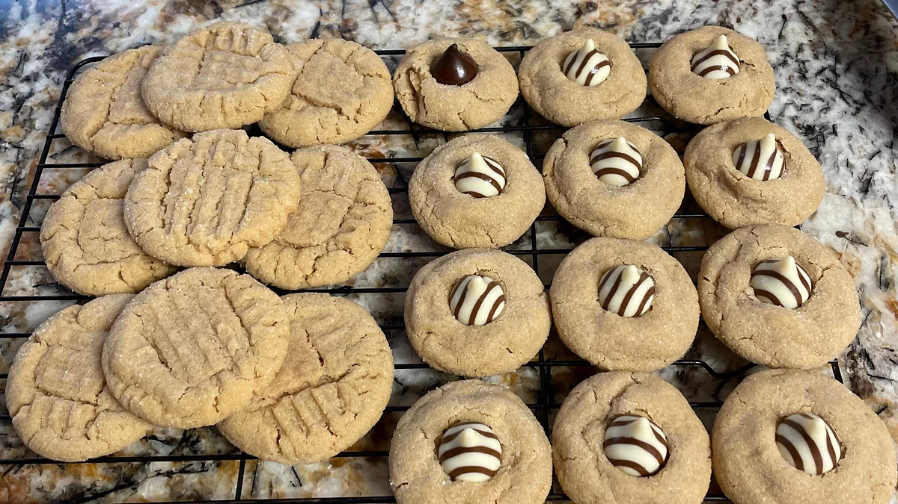

Recipes

Prep:
15 mins
Cook:
10 mins
Additional:
1 hr
Total:
1 hr 25 mins
Servings:
24
Yield:
4 dozen
Great to cook during Christmas
- 1 cup unsalted butter
- 1 cup crunchy peanut butter
- 1 cup white sugar
- 1 cup packed brown sugar
- 2 large eggs eggs
- 2 ½ cups all-purpose flour
- 1 teaspoon baking powder
- ½ teaspoon salt
- 1 ½ teaspoons baking soda
Step 1
Cream butter, peanut butter, and sugars together in a bowl; beat in eggs.
Step 2
In a separate bowl, sift flour, baking powder, baking soda, and salt; stir into butter mixture. Put dough in refrigerator for 1 hour.
Step 3
Roll dough into 1 inch balls and put on baking sheets. Flatten each ball with a fork, making a crisscross pattern. Bake in a preheated 375 degrees F oven for about 10 minutes or until cookies begin to brown.